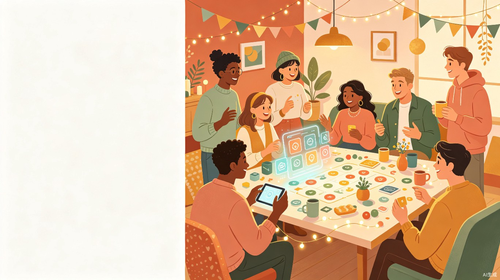
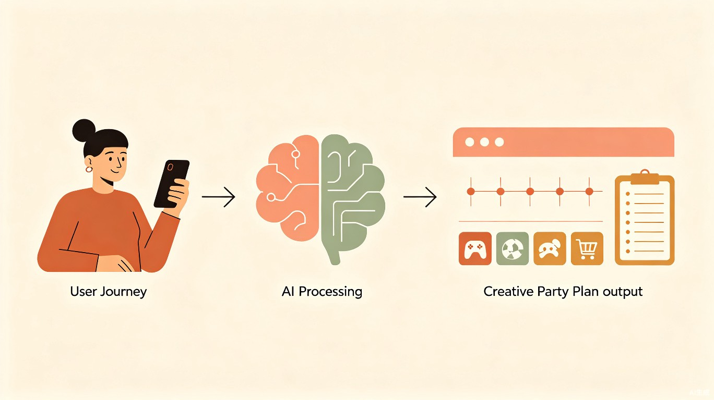
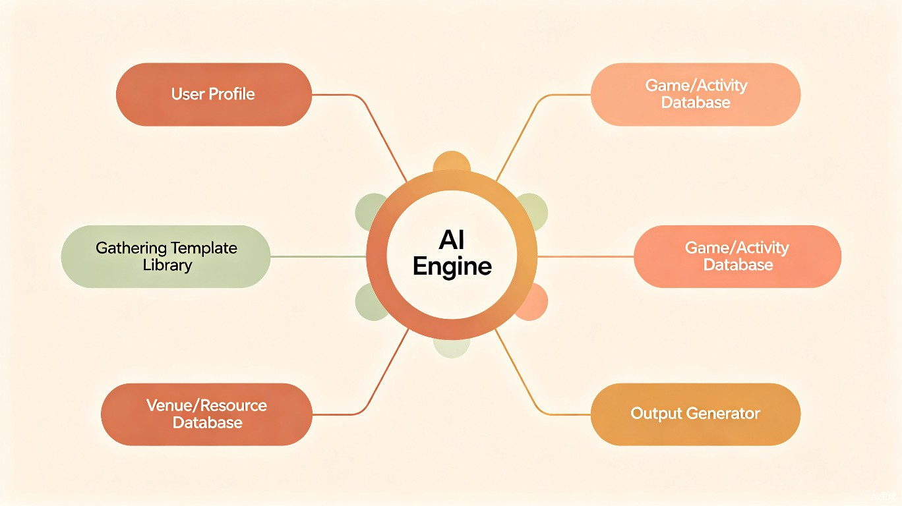

01需求背景
1.1 现状与痛点
朋友之间的聚会，绝大多数围绕"吃饭"展开——约个餐厅，坐下来聊聊天，吃完散场。这个模式本身没问题，但几乎所有聚会的体验过程都没有经过设计。人们不会刻意去想：这次聚会要创造什么氛围？参与者之间需要什么样的连接？有没有环节可以让彼此更深地了解？
与此同时，促动师（Facilitator）这个职业已经存在数十年。他们在企业培训、团队建设、社群活动中扮演着"体验设计师"的角色——设计破冰环节、引导讨论流程、制造关键体验时刻。但这些专业能力被锁在培训教室和企业会议室里，普通人几乎无法触及。通用大模型（ChatGPT、豆包、Kimi等）虽然能对话式地给出一些聚会建议，但缺乏结构化的体验设计知识库，输出质量高度依赖用户自己的提问能力，且无法针对具体参与者画像生成个性化方案。
1.2 不解决会怎样
社交聚会持续停留在"低设计密度"状态——人们投入了大量时间和金钱，但获得的体验回报远低于投入。朋友之间的感情维系缺乏"关键时刻"的催化，社群的凝聚力难以建立，团建流于形式。更本质地说，大多数人对"好聚会"的标准很低，他们不知道一次经过设计的聚会可以是什么样的。
1.3 为什么是现在
大语言模型的成熟使得"结构化知识 + 个性化推理"的组合成为可能。促动师行业积累了大量经过验证的活动方法论（破冰技术、引导框架、体验时刻设计原则），但这些知识散落在培训手册和从业者经验中。AI可以将这些隐性知识显性化、产品化，降低普通人使用专业体验设计方法的门槛。[PM hypothesis]
02产品定位
2.1 一句话定位
AI驱动的聚会体验设计工具——用户输入聚会的基本信息（人数、场合、参与者画像），AI输出从创意主题到完整执行流程的一站式体验设计方案。
2.2 产品要解决的问题
不知道玩什么
聚会除了吃饭聊天，缺乏有趣的活动内容。用户没有灵感储备，不知道什么游戏或环节适合当前场景。
没有流程概念
即使有了一些活动点子，也不知道怎么编排成一条完整的体验线——破冰、高潮、收尾各是什么，每个环节多长时间。
执行细节缺失
想到了方案，但不知道需要准备什么物料、怎么分工、场地有什么要求、预算大概多少，最终不了了之。
众口难调
参与者性格各异，有人外向有人内向，有人爱运动有人爱文艺。一刀切的方案容易冷场或让人不适。
2.3 核心价值主张
不是帮你"策划一个活动"，而是帮你设计一段体验。区别在于：活动策划关注的是"做什么"，体验设计关注的是"参与者感受什么"。产品的核心能力是：根据具体的参与者画像和场合，生成个性化的体验流程——包含情感曲线设计、环节编排、互动方式、物料准备和分工清单。
03用户与场景
3.1 目标用户画像
28岁，互联网公司产品经理，朋友圈里的"组织委员"，平均每月牵头组织1-2次朋友聚会。每次聚会前会在小红书上搜攻略，但信息零散、需要大量筛选。痛点：有组织意愿但缺乏创意，每次方案都差不多，朋友开始审美疲劳。
32岁，准备给女朋友策划一个有创意的生日派对。平时不怎么组织活动，但这次想做得特别。痛点：零策划经验，不知道从哪入手，百度/小红书搜出来的方案千篇一律，缺乏针对性和惊喜感。
35岁，公司HRBP，每季度需要组织一次部门团建。痛点：团建方案严重同质化（吃饭+KTV/密室逃脱），团队真正需要的协作和沟通目标没有被满足。
3.2 核心使用场景
触发：周五下午，小林在群里问"周末谁有空聚一下"，5个人响应。
现状：约了个火锅店，吃完各回各家。
使用产品后：小林打开产品，输入"6人周末聚会、关系较熟、有2个新朋友"，AI生成了3个主题方案。小林选了"厨艺盲测之夜"——每个人带一道菜，大家一起盲测评分，中间穿插"两真一假"破冰。附带了完整的流程时间线、物料清单和分工安排。
触发：阿杰想给女朋友策划一个难忘的30岁生日派对。
现状：订了个包厢，买了个蛋糕，来了10个朋友吃饭唱歌。
使用产品后：输入"30岁生日、女性寿星、10人、希望温馨有惊喜"，AI生成了"时间胶囊"主题方案——到场时每人写一张对寿星的寄语封存，暖场环节是"30个关键词猜猜看"（围绕寿星的30段回忆），高潮是播放秘密收集的祝福视频。
触发：王姐需要为15人的新组建团队策划一次破冰团建。
使用产品后：输入"团队破冰、15人、互相不熟、室内2小时"，AI生成了"认识你地图"方案——通过结构化的三轮互动（从浅到深）让团队成员快速建立个人连接，而不是流于表面。
04竞品分析
4.1 竞品格局
经过调研，目前市场上不存在直接对标的产品。现有解决方案分布在以下四个象限中：
| 产品 | 定位 | 核心能力 | 与我们的差异 |
|---|---|---|---|
| 小红书 / 抖音 | UGC内容平台 | 聚会攻略、游戏推荐（用户分享） | 信息零散无结构，无个性化，需人工筛选大量内容 |
| ChatGPT / 豆包 / Kimi | 通用大模型 | 对话式生成聚会建议 | 无专业知识库，输出质量依赖Prompt能力，无结构化模板和流程编排能力 |
| 活动智策 | AI营销活动策划 | 生成营销活动方案（传播节奏、物料清单） | 面向营销活动（618、快消推广），不覆盖社交聚会场景 |
| Partiful / Evite | 社交活动邀请工具 | 创建邀请函、RSVP管理 | 只解决"通知+确认出席"环节，不涉及活动内容设计 |
| 聚会游戏App | 单一游戏工具 | 狼人杀、谁是卧底等特定游戏 | 只解决"玩什么"中的某一个选项，不是整体体验设计 |
4.2 市场空白
通过竞品分析可以明确：面向个人/朋友社交聚会的AI体验设计工具，目前市场上几乎为零。通用大模型是最接近的替代方案，但它在三个方面存在明显不足——缺乏聚会体验设计的专业知识、无法根据参与者画像个性化生成方案、输出结果没有结构化的流程编排。这正是本产品的切入点。
4.3 差异化定位
专业知识驱动
内嵌促动师方法论和经过验证的互动技术，而非仅靠通用对话能力生成内容。
参与者感知
不只关注"活动是什么"，更关注"参与者是谁"——性格、关系亲疏、人数，都会影响方案设计。
全流程闭环
从创意灵感到可执行方案（时间线+分工+物料），形成完整链路，而非只给点子。
05功能需求
5.1 功能总览
| # | 功能模块 | 功能描述 |
|---|---|---|
| F1 | 聚会信息录入 | 用户输入聚会的基本要素：场合类型（日常/生日/节日/团建/主题派对等）、参与人数、参与者关系（陌生/一般/较熟/亲密）、参与者画像标签（可选：性格偏好如外向/内向/文艺/运动，年龄段）、场地条件（室内/室外/餐厅/家中）、预算范围（可选）、时长限制。系统根据输入信息构建"聚会上下文"，作为方案生成的输入。 |
| F2 | AI创意方案生成 | 基于聚会上下文，AI生成2-3个不同风格的创意主题方案。每个方案包含：主题名称、一句话描述、适合的场景说明、核心亮点。用户可浏览方案卡片，选择感兴趣的方向进入下一步细化。支持"换一批"重新生成，以及"混合"——从不同方案中挑选喜欢的元素组合。 |
| F3 | 体验流程规划 | 用户选定创意方向后，AI生成完整的体验流程方案，包含：情感曲线（破冰→升温→高潮→收尾的体验节奏设计）、环节清单（每个环节的名称、时长、内容描述、目的说明）、时间线（按时间轴排列的完整流程）、主持人指南（每个环节的具体操作说明和话术建议）、参与者感受设计（每个环节预期参与者获得什么体验）。 |
| F4 | 执行支持工具 | 基于流程方案，自动生成可执行的落地支持：物料清单（每个环节需要准备什么物品/道具/食物/装饰）、分工安排（各环节由谁负责什么）、预算估算（物料的大致花费参考）、场地布置建议（需要什么样的空间布局）、注意事项和风险预案（可能出现的问题及应对方案）。 |
| F5 | 方案调整与对话优化 | 用户可以对生成的方案进行自然语言调整："把第三个环节换成更适合室内的小游戏"、"预算控制在200以内"、"有一个参与者不太爱说话，怎么照顾到"。AI基于修改指令重新生成或局部调整方案，保持整体流程的连贯性。 |
| F6 | 方案保存与分享 | 用户可以将满意方案保存为个人方案库（支持标签分类：生日/团建/日常等），支持生成可分享的方案卡片（长图或链接形式），方便发给参与者提前了解流程或分工安排。方案可导出为结构化的执行清单。 |
5.2 核心页面原型
页面1：聚会信息录入页
交互逻辑：必填字段（场合、人数、关系）未填时，主按钮置灰不可点击。选择"先看看案例"跳转到方案库页面，展示热门方案案例（不登录也可浏览）。点击"生成创意方案"后进入加载过渡页（2-3秒），随后跳转到方案选择页。
规则约束：人数范围1-50人；超过20人时，系统自动提示"人数较多，建议选择适合大群体的方案类型"；参与者画像标签为可选，最多选5个。
页面2：创意方案选择页
方案A：厨艺盲测之夜
每人带一道拿手菜，匿名品尝并投票评分。适合6-10人的小型聚会，在轻松的美食氛围中创造自然的话题和笑声。
互动性强 适合家宴 低预算方案B：回忆拍卖会
每人准备3件"有故事的物品"，用虚拟竞拍币出价竞拍，最高价者获得物品和背后的故事讲述权。
深度交流 适合较熟关系方案C：两真一假挑战赛
经典社交游戏升级版——分组对抗，加入限时挑战和积分机制，让破冰变得有竞技感。
破冰首选 简单易行交互逻辑：默认选中第一个方案（高亮边框）。用户点击任意方案卡片可切换选中。点击"选择并生成流程"进入流程生成页。点击"换一批"后重新调用AI生成新的方案集（最多可换5次，之后提示"换个条件试试？"）。
页面3：体验流程详情页
每位参与者将带来的菜品放在盲测区，贴上编号标签。签到时领取投票卡和"品鉴笔记"。
每人轮流说三件关于自己的事（两真一假），其他人猜哪件是假的。快速拉近距离，为后续环节创造轻松氛围。
依次品尝所有菜品，在投票卡上为每道菜打分（味道/创意/颜值三维度），并在品鉴笔记上写一句评价。品尝过程中自由交流。
公布每道菜的制作者和得分。颁发趣味奖项："最佳创意奖"、"最治愈味道"、"深夜放毒奖"。获奖者分享菜品背后的故事。
围绕美食话题自由交流。主持人可以抛出"今晚最让你惊喜的一道菜"作为收尾话题，留下温暖的结束语。
交互逻辑：流程以时间线形式呈现，每个环节可点击展开查看详细的主持人话术和操作指引。"调整方案"按钮打开底部对话输入框，用户可以用自然语言要求修改。"查看物料清单"跳转到执行支持面板（F4）。"保存 & 分享"触发保存和分享功能（F6）。
边界场景：如果AI生成失败或超时，显示"方案生成遇到一点问题，换个条件重试？"并提供重试按钮；如果用户调整指令导致方案自相矛盾（如"时长缩短到30分钟但要求5个环节"），AI提示"这个组合可能时间不够，建议精简到2-3个核心环节"。
06核心体验流程

flowchart LR
A[用户输入\n聚会信息] --> B[AI生成\n2-3个创意方案]
B --> C{用户选择\n方案方向}
C --> D[AI生成\n完整体验流程]
D --> E{是否满意？}
E -->|调整| F[自然语言\n修改指令]
F --> D
E -->|满意| G[查看\n物料/分工/预算]
G --> H[保存到\n个人方案库]
H --> I[分享给\n参与者]
整个流程的设计原则是：渐进式深入。用户不需要一次性提供所有信息——先给最基础的三个条件（场合、人数、关系）就能看到创意方案，逐步细化后才生成完整的执行流程。这降低了使用门槛，也给了用户在每个阶段参与决策的空间。
07AI能力模型

7.1 知识库构成
AI生成质量的核心支撑是一个结构化的聚会体验设计知识库，包含以下层次：
体验设计方法论
破冰技术分类库（从轻度到深度）、体验曲线设计原则（注意力管理、情感节奏）、促动师常用框架（如ORID焦点讨论法、世界咖啡、开放空间技术等简化版）。
活动素材库
按场景分类的互动游戏和活动模板（聚会/团建/派对/户外/室内），每个模板包含：适用人数、适用关系、所需时长、物料需求、操作步骤、主持人话术。
方案编排规则
不同场合的流程编排最佳实践——破冰环节应占多少比例、高潮体验的触发条件、收尾环节的情感处理。这些规则确保AI生成的方案在结构上是合理的。
参与者适配模型
不同性格组合、人数规模、关系深度对应的策略——内向者多的聚会不适合一开始就做高强度互动、陌生人之间需要更多结构化的破冰、熟人之间可以更自由地设计。
7.2 输入/输出规格
输入
- 必要输入：场合类型、参与人数、参与者关系
- 增强输入：参与者性格标签、场地条件、预算范围、时长限制
- 对话式输入：用户的自然语言修改指令（在方案调整环节使用）
输出
- 创意阶段：2-3个主题方案（名称+描述+亮点+标签）
- 流程阶段：完整体验流程（情感曲线+环节清单+时间线+主持人指南）
- 执行阶段：物料清单+分工安排+预算估算+场地建议+风险预案
7.3 质量标准
08数据与指标
8.1 核心指标
| 指标类别 | 指标名称 | 定义 | 用途 |
|---|---|---|---|
| 获取 | 方案生成次数 | 用户完成信息录入并成功获得AI方案的次数 | 衡量产品核心功能的使用频率 |
| 获取 | 方案完成率 | 从方案生成到查看完整流程的用户比例 | 判断AI生成质量是否足以让用户继续探索 |
| 质量 | 方案保存率 | 生成方案后被用户保存的比例 | 最直接的质量信号——用户认为有价值的方案才会保存 |
| 质量 | 调整后满意度 | 用户在对话调整后未继续修改的比例 | 衡量AI方案调整能力的准确度 |
| 传播 | 分享率 | 保存方案后被分享（生成链接或长图）的比例 | 衡量方案的社交传播价值和产品的自增长潜力 |
| 留存 | 7日回访率 | 首次使用后7天内再次打开产品的用户比例 | 判断产品是否解决了真实需求 |
8.2 用户反馈收集
除了行为数据，需要在产品中嵌入轻量的反馈机制——方案查看完成后弹出一个简洁的反馈选项："这个方案对你有帮助吗？"（有用/一般/没用），辅以可选的文本输入框"想告诉我们什么？"。这个反馈直接关联到AI生成质量的持续优化。[Assumption — 反馈机制的具体形态需要在MVP验证后迭代]
09迭代计划
产品形态：微信小程序（最轻量的获取路径，便于在朋友间分享传播）
验证假设：用户是否愿意使用AI工具来获取聚会灵感，而不是继续在小红书上搜索
成功标准：方案生成完成后保存率 ≥ 30%，7日回访率 ≥ 15%
关键验证：用户是否从"看看灵感"升级为"真正按照方案去执行聚会"
成功标准：从创意方案到完整流程的转化率 ≥ 50%，用户主动反馈"按方案执行了"的比例 ≥ 20%
增长逻辑：用户分享方案带来新用户，真实案例反哺AI质量形成正循环
成功标准：月活用户增长，方案社区UGC内容占比 ≥ 30%
10风险与应对
| 风险 | 概率 | 影响 | 应对策略 |
|---|---|---|---|
| AI生成质量不稳定 方案内容空洞、不相关、或缺乏可执行性 |
高 | 高 | 知识库质量是根基——MVP阶段重点打磨知识库内容，而非界面功能。建立内部评分标准（相关性、完整性、安全性、可执行性四维度），持续优化Prompt和知识库。保留"换一批"功能让用户有选择余地。 |
| 用户觉得"没必要用工具" 大多数人聚会就是随便约一下，不认为需要"设计" |
中 | 高 | 通过方案案例展示"经过设计的聚会和没经过设计的聚会，体验差异有多大"来教育市场。从特殊场合（生日、纪念日）切入，这些场景用户的策划意愿更强，再逐步渗透到日常聚会。 |
| 大模型API成本 频繁调用大模型API的token成本 |
中 | 中 | MVP阶段使用知识库+Prompt工程降低对模型推理的依赖（将专业知识预编译为结构化模板，减少模型自由生成的部分）。用户每日生成次数设限。中期考虑部署轻量级模型降低成本。 |
| 通用大模型追赶 ChatGPT等通用模型能力提升后可能直接覆盖这个需求 |
低 | 中 | 专业知识库和结构化输出是护城河——通用模型可以生成灵感，但难以保证体验流程的结构化编排质量和参与者适配的准确性。持续积累真实案例数据形成数据壁垒。 |